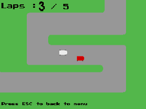
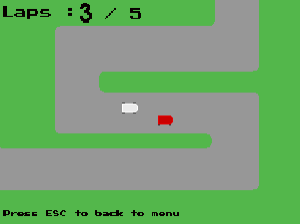

Rocket League 1D est une copie du célèbrejeu Rocket League en vue de dessus.Le jeu peut se jouer en solo ou en multijoueur sur un même écransous divers mini-jeux tous plus fun les uns que les autres.
 
